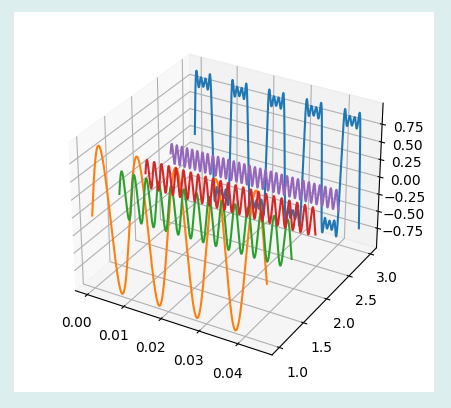

Plot3D三维曲线控件主要用于在三维空间内显示信号曲线，其图形显示效果如下：

在Python程序GUI界面中创建一个Plot3D三维曲线控件的命令为:
hl=dr.DRPlot3D(win,x,y,w,h,title,xData,yData,zData)
其中hl是创建时用户设定的变量名。当xdata、ydata、zdata设为零，则初始曲线为空。Plot3D三维曲线控件有2个属性函数。
hl.setValue3D(x,y,z)#以覆盖形式绘制曲线
hl.addValue3D(x,y,z)#以添加形式绘制曲线
Plot3D三维曲线控件继承至Tkinter的Frame控件和Matplotlib的plot3D函数，必要时可参阅相关资料。
.